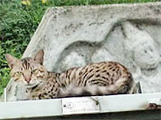

「『価格の安さ、欧米では得られない体験ができる、会話する機会が多そう』という理由で、参加を決めました。
以前、渡航経由地のバンコクで暴動があった為やむなく出発を延期しました。今回はその再チャレンジでしたが、諸事情により本当に急な申込みになってしまいました。
にもかかわらず、逢坂さんにはとても柔軟に対応していただきました。プログラム参加中は、少ない日程の中、世界遺産登録地シーギリヤに行くか行かないかで悩み、現地スタッフのマーネルさんを困らせました。
英語レッスンは、わずか一週間という短期間でしたが、先生が内容をあらかじめ工夫してくださったため、楽しく、また実践的に学べました。
単語の増強ばかりでなく、既習済の英語を実際に何度も使っていくことで、眠っていた英語の運用能力が磨かれたと思います。
宿題はなく、観光や生活上のやりとりを通してのレッスンがメインでした。
申し込んだ当初は、日本と違う環境に適応できるか、ホストファミリーとうまくやっていけるか心配でしたが、その心配は無用でした。
でも、ようやく環境に慣れかけてきたところで帰国してしまって、ちょっと残念でした。
もう少しいたら自由にあちこち動き回れるようになって、楽しさがさらに増えるかもしれません。
ホストマザーには、滞在中、常に私の意志を尊重していただきました。
食事も本当に美味しかったです。（後で、日本人の味覚に合わせて毎食工夫して作っていたと聞きました）
余程口に合ったのか、私は帰国した今も『マザーの作ったカレー』が時々無性に食べたくなります。
ホストファザーも、程よい距離で、いつも温かく見守ってくださいました。

滞在中（６月１４日～２０日）は雨季にもかかわらず『晴天続き』でしたが、湿気は高く、洗濯物がなかなか乾かなくて困りました。
蚊には万全の対策で臨んだので困りませんでしたが、たまにチョロリとゴキブリが登場し、ギョッとさせられました。
（でも私には英語を学ぶことの方がずっと大事だったので、すべて笑い話♪）

行く前は、スリランカという国は、とにかく遠い印象でした。
インドとの違いもよくわかりませんでした。インドにはまだ行ったことがないので正確に比較はできませんが、実際に行ってみて、スリランカは、人もカレーも、インドよりもマイルドな気がします。
スリランカのカレーはカレーの中にココナツミルクを混ぜるので、スパイシーだけどマイルド。
現地の方たちも、そんなスリランカンカレーのように、いつも優しく穏やかでした。
気持ちの細やかさは、日本人の感覚に近いような気がします。
現地のスタッフもステイ先の家族も、皆さん、まるで自分の家族や友だちのように大切にしてくださるので、その中に溶け込んで楽しむことができるなら、こんなに英語力を伸ばせる好環境はない？かもしれません。
スリランカには、確かに途上国ならではの『不自由さ』がありますが、そのかわり、相手の英語力に合わせて『身をかがめてくれる優しさ』があります。
そして日本人がほとんどいないので、珍しがられたり、丁寧に接してもらえると思います。

それから、先進国ではありえない、とても面白い体験ができるので、『逞しく生きる骨太さ』も育つような気がします。
『上手に話せることが当たり前』の環境で、蹴飛ばされながら『なにくそ！』と頑張る勉強もいいですが、幼児が温かく見守られながら育つように、ゆっくり楽しんで英語を伸ばしていきたい人は、（一見、回り道のように見えて）意外とスリランカ、おすすめかも。
『一週間』という短い期間でも十分に充実した体験ができたので、期間を理由に躊躇されている社会人の方にもオススメします。
最後に、、、
とにかく思い出深い、充実した１週間でした。
またこのプログラムを通じて、ほんの少し『骨太』になりました。
最初の申込みをしてから、常に完璧な対応を続けてくださった逢坂さん、もう一度、本当にありがとうございました。
心から感謝申し上げます。
度重なるお願いにすっかりお世話になってしまったマーネルさん、実母のようにおおらかに受け止めてくれたホストマザーのスミさんにも、よろしくお伝えください。
今回、不自由さも含めて色々体験できたので、またぜひ参加したいと思います。
腰を据えて２週間～３ヶ月くらい滞在したら、きっと英語も伸びるでしょうね。
でもそんな長期でなくても、また皆さんに会いに、そしてスミママのカレーを食べに、『里帰り』したいです。」